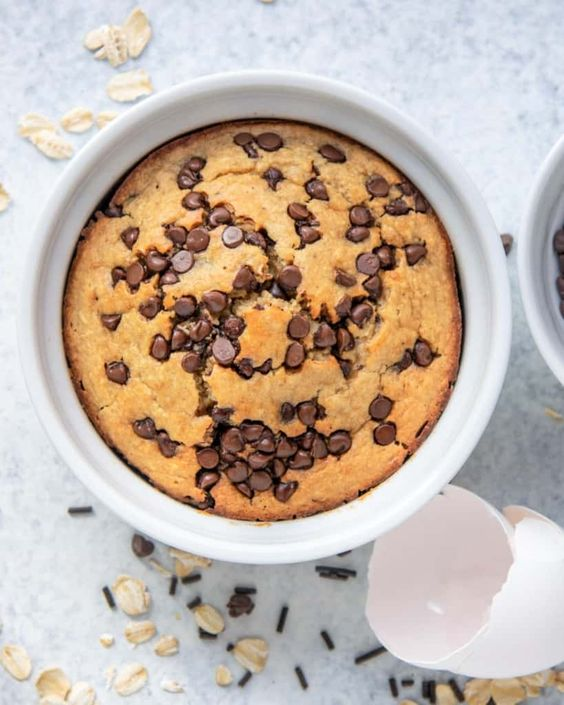
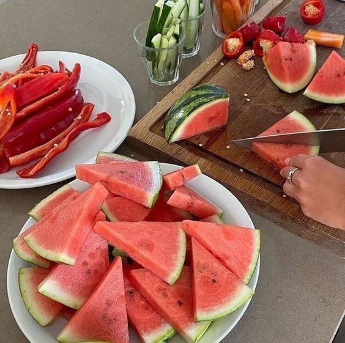
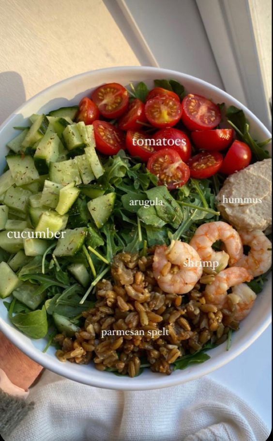
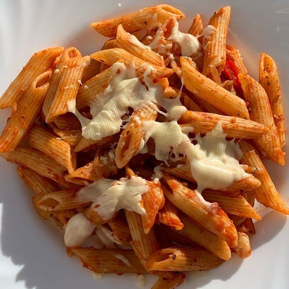
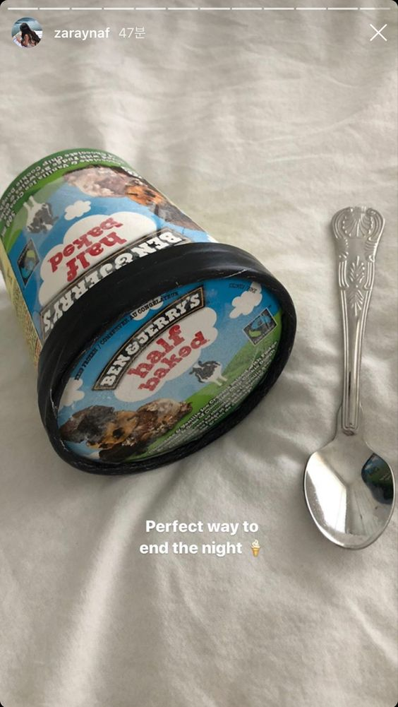
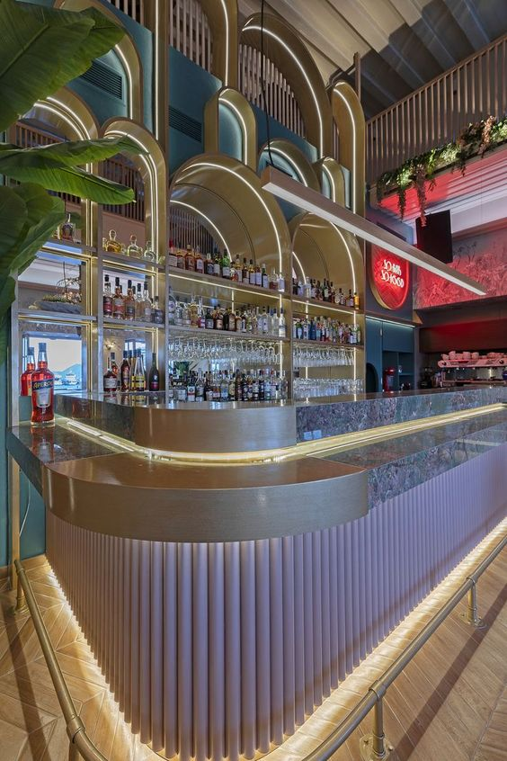

Food Inspiration
- Breakfast
Houd jij van Havermout? Dan is dit het perfecte ontbijt voor jou! Het is gezond, snel klaar en je zit vol tot aan de middag. Je kan oneindig veel uitproberen met deze baked oats. Je kan er verschillende toppings op doen. Je kan ook chocolate baked oats maken of blueberry baked oats, wat je zelf het lekkerste vindt. Een mogelijkheid is ook om zelf een eigen creatie te maken.

- Snack
Soms krijg je wel eens honger en dan kan je beter een kleine snack eten in plaats van al meteen een hele maaltijd. Fruit is altijd goed maar je kan natuurlijk ook een koekje eten of een smoothie drinken. Zelf vind ik in de zomer watermeloen het lekkerste, het is verfrissend en het smaakt heerlijk.

- Lunch
Groenten en fruit zijn heel belangrijk voor je lichaam. Daarom is een sladade ideaal. Je kan er ook weer veel in variëren met groenten maar je ka er ook fruit indoen zoals een appel met kaneel in de pan of dressings kunnen het ook al lekkerder maken. Laat je inspiratie maar naar boven komen.

- Dinner
Wie lust er nu geen pasta?! Persoonlijk zou ik het elke dag kunnen eten. Want je kan er weer veel verschillende maken en voor elke gelegnheid past er wel eentje.
En vooral na een lange werkdag is het heerlijk om te genieten van een lekkere pasta. Een leuke quote van een vriendin: eat pasta run fasta.

- Dessert
Je kan je dag natuurlijk niet beter afsluiten met een verdiend dessert. Hier kan je weer heel veel dingen kiezen. Heb je zin om nog iets te maken? Dan zijn bijvoorbeeld brownies helemaal goed. Maar ben je helemaal bek af en heb je daar geen zin meer in? Dan pak je gewoon een zak chips uit te kast. of... misschien nog wel iets beters BEN & JERRY'S!!

- way out
Heb je nu echt geen zin om te koken maar wel om je te laten bedienen en bij te kletsen met vrienden of vriendinnen? Dit is oplossing! Je moet niet nog bedenken wat je gaat maken en of je wel alles in huis hebt. Nee trek gewoon een leuke outfit aan en ga naar een restaurant.

Start
Magic